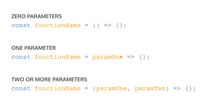
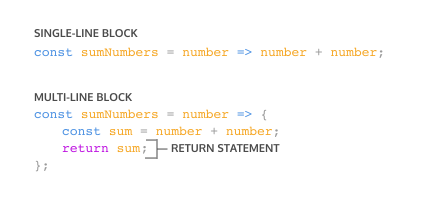

Funktionen
Was sind Funktionen?
Wenn du zum ersten Mal lernst, wie man die Fläche eines Rechtecks
berechnet, gibt es eine klare Schrittfolge:
- Miss die Breite des Rechtecks.
- Miss die Höhe des Rechtecks.
- Multipliziere Breite und Höhe miteinander.
Mit etwas Übung kannst du die Fläche schnell berechnen, ohne jedes Mal
alle Schritte einzeln durchzugehen.
Im Code sieht das so aus:
const width = 10;
const height = 6;
const area = width * height;
console.log(area); // Ausgabe: 60
Stell dir nun vor, du sollst die Fläche von drei verschiedenen Rechtecken berechnen:
// Fläche des ersten Rechtecks
const width1 = 10;
const height1 = 6;
const area1 = width1 * height1;
// Fläche des zweiten Rechtecks
const width2 = 4;
const height2 = 9;
const area2 = width2 * height2;
// Fläche des dritten Rechtecks
const width3 = 10;
const height3 = 10;
const area3 = width3 * height3;
In der Programmierung begegnet uns oft die Aufgabe, denselben Vorgang
mehrfach auszuführen. Anstatt denselben Code immer wieder neu zu
schreiben, können wir ihn in einem einzelnen, wiederverwendbaren
Codeblock zusammenfassen und mit einer Aufgabe verknüpfen.
Genau das sind Funktionen: Wiederverwendbare Bausteine im Code, die
eine Folge von Anweisungen bündeln, um eine bestimmte Aufgabe zu
erledigen. So kannst du denselben Prozess ganz einfach immer wieder
aufrufen – ohne ihn jedes Mal neu schreiben zu müssen.
Funktionsdeklarationen
In JavaScript gibt es viele Möglichkeiten, eine Funktion zu
erstellen. Eine davon ist die sogenannte Funktionsdeklaration.
Ähnlich wie bei einer Variablendeklaration, bei der ein Wert an
einen Namen gebunden wird, verknüpft eine Funktionsdeklaration eine
Funktion mit einem Bezeichner – also einem Namen.
Aufbau einer Funktionsdeklaration:
- Das Schlüsselwort "function".
- Der Name der Funktion, also der Bezeichner, gefolgt von runden Klammern ().
- Der Funktionskörper: ein Block aus Anweisungen, der in geschweifte Klammern {} eingeschlossen ist und die eigentliche Aufgabe der Funktion definiert.
Eine Funktionsdeklaration definiert also eine Funktion, die unter
einem bestimmten Namen abrufbar ist. Im nächsten Abschnitt werden
wir anschauen, wie der Code innerhalb des Funktionskörpers
ausgeführt wird.
Ein wichtiger Punkt, den du kennen solltest, ist das Hoisting in
JavaScript. Diese Eigenschaft bewirkt, dass Funktionsdeklarationen
bereits vor ihrer eigentlichen Definition im Code aufgerufen werden
können.
Beispiel:
sayHello();
function sayHello() {
console.log("Hallo!");
}
Obwohl der Funktionsaufruf vor der Deklaration steht, funktioniert
der Code - das ist dank Hoisting möglich. Jedoch gilt Hoisting nicht
als gute Praxis.
Für weitere Informationen siehe:
Hoisting
Wo Text des links???
Eine Funktion aufrufen
Eine Funktionsdeklaration allein sorgt noch nicht dafür, dass der
Code im Funktionskörper ausgeführt wird. Sie beschreibt lediglich,
dass diese Funktion existiert. Erst durch einen Funktionsaufruf wird
der Code innerhalb des Funktionskörpers tatsächlich ausgeführt.
Um eine funktion aufzurufen, schreibst du einfach den Namen der
Funktion, gefolgt von runden Klammern ():
sayThanks();
Dieser Aurfur aktiviert die Funktionen und führt alle Anweisungen
innerhalb des Funktionskörpers aus - also den Code, der in den
geschweiften Klammern {} der Funktionsdeklaration
steht.
Das Tolle: Du kannst eine Funktion so oft aufrufen, wie du möchtest
- immer dann, wenn die Aufgabe erneut erledigt werden soll.
Beispiel:
Code:
function sayThanks() {
console.log('Thank you for your purchase! We appreciate
your business');
}
sayThanks();
sayThanks();
sayThanks();
Ausgabe:
Thank you for your purchase! We appreciate your business
Thank you for your purchase! We appreciate your business
Thank you for your purchase! We appreciate your business
Je öfter du die Funktion aufrufst, desto öfter wird der enthaltene Code ausgeführt – so sparst du dir das wiederholte Schreiben desselben Codes und kannst ihn bequem an einer Stelle verwalten.
Parameter und Argumente
Bisher haben wir Funktionen kennengelernt, die eine Aufgabe ohne
Eingaben ausführen. Doch viele Funktionen können Eingaben
entgegennehmen, um ihre Arbeit individuell anzupassen und flexibler
zu gestalten.
Parameter
Beim Deklarieren einer Funktion kannst du Parameter festlegen.
Parameter sind sozusagen Platzhalter für Werte, die der Funktion
beim Aufruf übergeben werden. Sie ermöglichen es der Funktion, mit
diesen Eingaben zu arbeiten und eine Aufgabe basierend auf den
übergebenen Informationen zu erledigen.
Im Beispiel oben nimmt die Funktion calculateArea zwei Parameter
entgegen: width und height. Innerhalb des Funktionskörpers verhalten
sich diese Parameter wie normale Variablen. Sie dienen als
Platzhalter für die Werte, die später bei einem Funktionsaufruf
übergeben werden und miteinander multipliziert werden, um die Fläche
zu berechnen.
Argumente beim Funktionsaufruf
Beim Aufrufen einer Funktion mit Parametern gibst du die
entsprechenden Werte – die sogenannten Argumente – in den Klammern
hinter dem Funktionsnamen an.
Hier werden die Zahlen 10 und 6 als Argumente übergeben. Wichtig
ist, dass die Reihenfolge der Argumente mit der Reihenfolge der
Parameter übereinstimmt: Das erste Argument wird width zugewiesen,
das zweite height.
Argumente können auch Variablen sein:
In diesem Beispiel werden die Werte für Breite und Höhe zunächst in
Variablen gespeichert und dann als Argumente an die Funktion
übergeben.
Beispiel:
Code:
function sayThanks(name) {
console.log('Thank you for your purchase, ' + name + '!
We appreciate your business');
}
sayThanks('Cole');
Dieser Funktionsaufruf gibt aus:
Thank you for your purchase, Cole! We appreciate your business.
Standardparameter
Eine praktische Neuerung, die mit ES6 eingeführt wurde, ist die
Möglichkeit, Standardparameter zu verwenden. Sie erlauben es, einem
Parameter einen voreingestellten Wert zuzuweisen – und zwar für den
Fall, dass beim Funktionsaufruf kein Argument übergeben wird oder
das Argument den Wert undefined hat.
Beispiel:
function greeting(name = 'stranger') {
console.log('Hello, ${name}!');
}
greeting('Nick');
greeting();
Ausgabe:
Hello, Nick!
Hello, stranger!
Hier erhält der Parameter name standardmäßig den Wert 'stranger',
falls beim Aufruf kein Wert angegeben wird.
Ein weiteres Beispiel:
function makeShoppingList(item1 = 'milk', item2 = 'bread', item3 =
'eggs') {
console.log('Remember to buy ${item1}');
console.log('Remember to buy ${item2}');
console.log('Remember to buy ${item3}');
makeShoppingList();
Ausgabe:
Remember to buy milk
Remember to buy bread
Remember to buy eggs
Dank Standardparametern kannst du Funktionen noch flexibler gestalten, ohne bei jedem Aufruf alle Argumente angeben zu müssen.
Rückgabewert (Return)
Wenn eine Funktion aufgerufen wird, führt der Computer den
enthaltenen Code aus und liefert ein Ergebnis zurück – den
sogenannten Rückgabewert. Standardmäßig ist dieser Wert undefined,
sofern nichts anderes festgelegt wurde.
Beispiel:
function rectangleArea(width, height) {
let area = width * height;
}
console.log(rectangleArea(5, 7));
Ausgabe:
undefined
Hier haben wir eine Funktion definiert, die die Fläche eines
Rechtecks anhand der Parameter width und height berechnet. Beim
Aufruf mit den Werten 5 und 7 erwarten wir eigentlich die Fläche 35.
Stattdessen gibt die Konsole jedoch undefined aus.
Haben wir einen Fehler gemacht? Nein! Die Funktion hat tatsächlich
korrekt gerechnet, aber das Ergebnis wurde nicht zurückgegeben oder
gespeichert.
Damit eine Funktion ein Ergebnis zurückliefert, verwenden wir das
Schlüsselwort return. Es folgt der Wert, den die Funktion
zurückgeben soll. Wird kein return angegeben, gibt die Funktion
automatisch undefined zurück.
Wichtig: Sobald eine return-Anweisung ausgeführt wird, endet die
Funktion sofort – nachfolgender Code im Funktionskörper wird nicht
mehr ausgeführt.

Ein Beispiel dazu:
function rectangleArea(width, height) }
if (width < 0 || height < 0) {
return 'You need positive integers to
calculate area!';
}
return width * height;
}
Hier prüft die Funktion zuerst, ob width oder height negativ sind.
Falls ja, gibt sie eine Fehlermeldung zurück und beendet die
Ausführung. Nur wenn beide Werte positiv sind, wird die Fläche
berechnet und zurückgegeben.
Warum ist return so wichtig?
Mit return können Funktionen Werte ausgeben, die du anschliessend in
Variablen speichern und weiterverarbeiten kannst.
Beispiel:
function monitorCount(rows, columns) {
return rows * columns;
}
const numOfMonitors = monitorCount(5, 4);
console.log(numOfMonitors);
Ausgabe:
20
Hier wird die Anzahl der Monitore anhand der Anzahl der Reihen und Spalten berechnet und das Ergebnis in numOfMonitors gespeichert. So kannst du das Ergebnis jederzeit wiederverwenden.
Hilfsfunktionen
In der Programmierung kannst du den Rückgabewert einer Funktion auch
innerhalb einer anderen Funktion verwenden. Solche Funktionen, die
innerhalb anderer Funktionen aufgerufen werden, nennt man oft
Hilfsfunktionen.
Hilfsfunktionen übernehmen kleine, klar definierte Aufgaben. Dadurch
wird dein Code übersichtlicher, leichter verständlich und im
Fehlerfall einfacher zu debuggen.
Betrachten wir ein Beispiel: Wir wollen eine Funktion schreiben, die
eine Temperatur von Celsius in Fahrenheit umrechnet. Dazu bieten
sich zwei Funktionen an:
Code:
function multiplyByNineFifths(number) {
return number * (9 / 5);
}
function getFahrenheit(Celsius) {
return multiplyByNineFifths(celsius) + 32;
}
getFahrenheit (15);
Ausgabe:
59
So läuft das ab:
- getFahrenheit(15) wird aufgerufen.
- Innerhalb von getFahrenheit ruft der Code die Funktion multiplyByNineFifths mit dem Wert 15 auf.
- multiplyByNineFifths multipliziert 15 mit 9/5 und liefert 27 zurück.
- Zurück in getFahrenheit wird zu 27 noch 32 addiert, was insgesamt 59 ergibt.
- Schliesslich gibt getFahrenheit(15) den Wert 59 zurück.
Durch den Einsatz von Hilfsfunktionen kannst du größere, komplexe
Aufgaben in kleine, gut überschaubare Schritte zerlegen – das macht
deinen Code modular, wiederverwendbar und leichter wartbar.
Weiteres Beispiel:
Code:
function monitorCount(rows, colums) {
return rows * columns;
}
function costOfMonitors(rows, columns) {
return monitorCount(rows, columns) * 200;
}
const totalCost = costOfMonitors(5, 4);
console.log(totalCost);
Ausgabe:
4000
Hier berechnet monitorCount die Anzahl der Monitore, während costOfMonitors daraus die Gesamtkosten errechnet. Die Logik ist sauber aufgeteilt und leicht nachvollziehbar.
Funktionsausdrücke
Eine weitere Möglichkeit, eine Funktion zu erstellen, ist der sogenannte Funktionsausdruck. Dabei wird eine Funktion innerhalb eines Ausdrucks definiert – meist ohne Namen. Solche anonymen Funktionen werden häufig einer Variablen zugewiesen, um später auf sie zugreifen zu können.

Wie funktioniert ein Funktionsausdruck?
- Variablendeklaration: Du legst eine Variable an, die als Bezeichner für die Funktion dient. Seit ES6 ist es üblich, dafür "const" zu verwenden.
- Anonyme Funktion: Du weist dieser Variablen eine anonyme Funktion zu, die mit dem Schlüsselwort "function" beginnt, gefolgt von runden Klammern für mögliche Parameter und geschweiften Klammern für den Funktionskörper.
- Aufruf: Um die Funktion auszuführen, rufst du die Variable mit Klammern auf, in denen du bei Bedarf Argumente übergibst.
Wichtiger Unterschied zu Funktionsdeklarationen
Funktionsausdrücke werden nicht gehoben ("not hoisted"). Das
bedeutet, sie sind erst nach der Definition im Code aufrufbar. Ein
Aufruf davor führt zu einem Fehler.
Beispiel:
Code:
const plantNeedsWater = function(day) {
if (day === 'Wednesday') {
return true;
} else {
return false;
}
};
console.log(plantNeedsWater('Tuesday'));
Ausgabe:
false
Arrow - Funktionen
Mit ES6 kam die Arrow Function-Syntax – eine kompakte und elegante
Möglichkeit, Funktionen zu schreiben. Statt das Schlüsselwort
"function" auszuschreiben, nutzt man hier die sogenannte „Fat
Arrow“-Schreibweise () =>.
Dabei schreibt man zuerst die Parameter in runden Klammern ( ),
gefolgt von einem Pfeil =>, der auf den Funktionskörper zeigt, der
in geschweiften Klammern { } steht:
const rectangleArea = (width, Height) => {
let area = width * height;
return area;
};
Warum Arrow - Funktionen?
Arrow-Funktionen sparen dir das wiederholte Tippen von "function"
und machen den Code übersichtlicher und moderner. Es lohnt sich, mit
den verschiedenen Varianten vertraut zu sein, da du beim Lesen von
JavaScript-Code häufig auf alle möglichen Schreibweisen treffen
wirst.
Beispiel:
Funktionsausdruck:
const plantNeedsWater = function(day) {
if (day === 'Wednesday') {
return true;
}else {
return false;
}
};
Arrow - Funktion
const plantNeedsWater = (day) => {
if (day === 'Wednesday') {
return true;
}else {
return false;
}
};
Beide Funktionen funktionieren identisch, die Arrow-Funktion ist jedoch kürzer und moderner.
Kompakte Arrow - Funktionen (Concise Body Arrow Functions)
JavaScript bietet verschiedene Möglichkeiten, Arrow-Funktionen besonders schlank zu schreiben. Die kürzeste Form nennt man Concise Body – eine kompakte Syntax, die den Code klarer und prägnanter macht. Hier sind die wichtigsten Techniken im Überblick:
-
Einzelner Parameter:
Hat die Funktion genau einen Parameter, können die Klammern um diesen weggelassen werden. Bei keinem oder mehreren Parametern sind die Klammern jedoch Pflicht.
 -
Einzeiliger Funktionskörper:
Wenn der Funktionskörper nur aus einer einzigen Anweisung besteht, kannst du die geschweiften Klammern {}weglassen. Der Ausdruck wird dann automatisch zurückgegeben - das nennt man implizite Rückgabe (implicit return).

Beispiel:
Funktion:
const squareNum = (num) => {
return num * num;
};
Kompakter:
const squareNum = num => num * num;
Was sich geändert hat:
- Die Klammern um den einzelnen Parameter "num" wurde entfernt.
- Die geschweiften Klammern für den Funktionskörper entfallen.
- Das Schlüsselwort "return" wurde durch die implizite Rückgabe ersetzt.
Ein weiteres Beispiel:
Funktion:
const plantNeedsWater = (day) => {
&nb return day === 'Wednesday' ? true : false;
};
Kompakter:
const plantNeedsWater = day => day === 'Wednesday' ? true : false;
Diese kompakte Schreibweise macht deinen Code oft lesbarer und eleganter – besonders bei kurzen Funktionen!